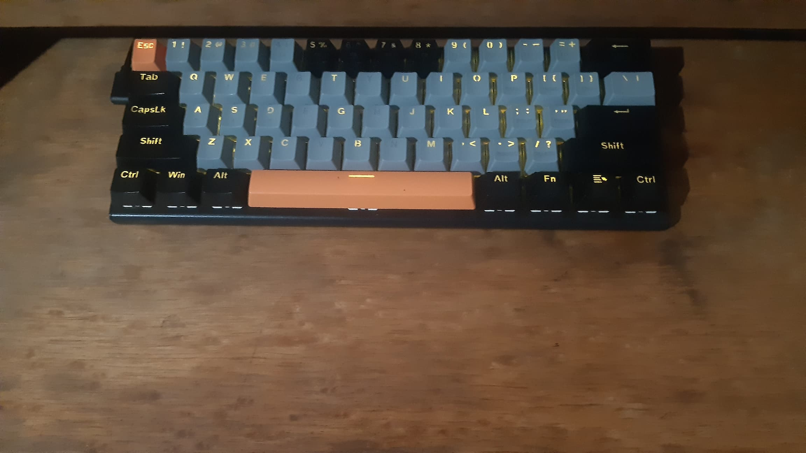
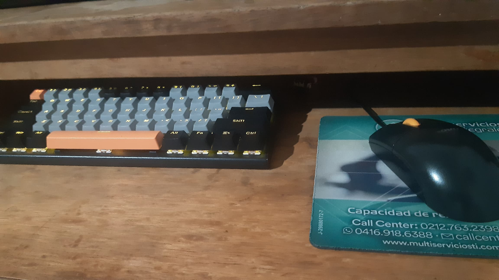
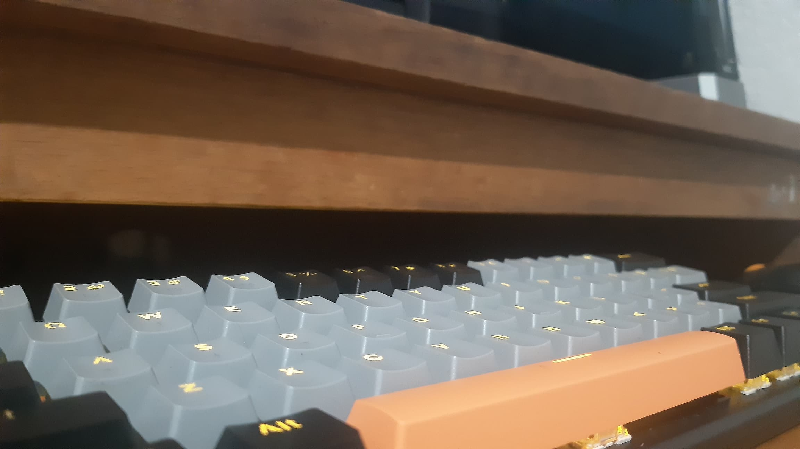

Aptitudes

Creativo

Innovador

Aprendizaje Rapido
"Me considero una persona extrovertida y apasionada por el aprendizaje. Disfruto de actividades como jugar, leer y sumergirme en el mundo del desarrollo. Esta pasión me impulsa a explorar constantemente nuevas áreas de conocimiento y a buscar experiencias en el ámbito del desarrollo."
Estudios
Tecnico Medio en Informatica (2017-2023)
Curso de programacion Web (2023-Actualmente)
Experiencia Laboral
Instituto de Prevision Social Para las Fuerzas Armadas
(2023-Actualmente)
Operador de Equipo de Computacion
(2023-Actualmente)
Operador de Equipo de Computacion